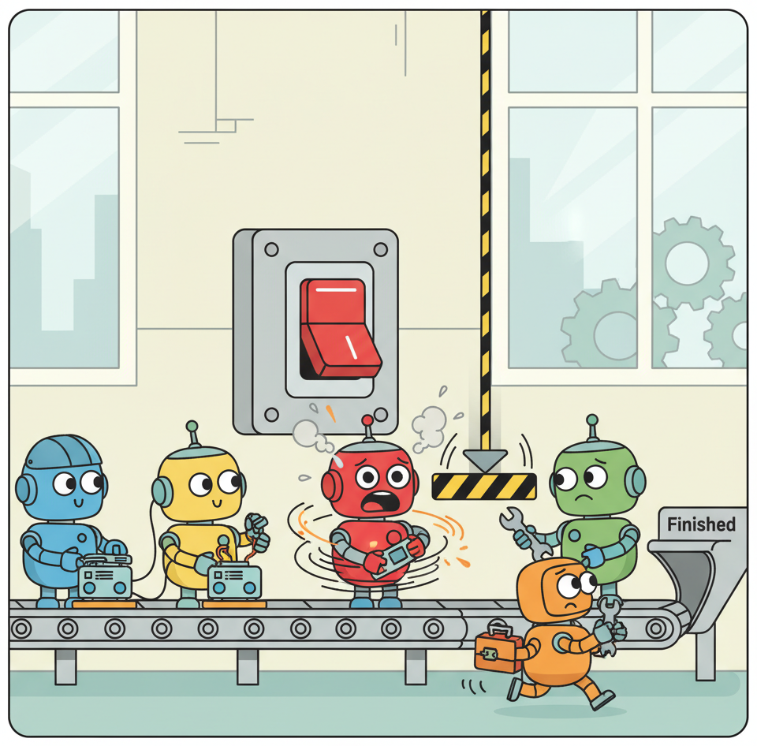

"An unreliable agent is worse than no agent at all, because it erodes trust in automation itself."
Sage, Trust Guarding AI Agent
Traditional software fails in predictable ways: null pointers, network timeouts, resource exhaustion. Agentic systems introduce an entirely new class of failure modes rooted in the non-deterministic nature of LLM reasoning. An agent can enter infinite loops, hallucinate tool calls that corrupt data, cascade errors across multi-step workflows, or silently degrade in quality without triggering any conventional error signal. Reliability engineering for agents requires adapting proven distributed systems techniques (circuit breakers, retry budgets, graceful degradation) while inventing new approaches for the unique challenges of autonomous AI workflows. This section provides the engineering patterns needed to build agents that fail safely and recover gracefully under production stress.
Prerequisites
This section builds on the agent architecture patterns from Chapter 23 (Tool Use and Protocols) and Chapter 22 (AI Agents). Familiarity with production deployment concepts from Chapter 30 (Observability and Monitoring) is also important.

35.5.1 Failure Modes Unique to Agentic Systems
Before designing reliability patterns, you must understand how agents fail. The failure taxonomy for agentic systems differs substantially from traditional microservice architectures because the "logic" driving execution is a probabilistic language model rather than deterministic code.
Traditional software crashes with a stack trace. Agentic software crashes with a polite apology, a hallucinated explanation, and a $47 API bill. Debugging the first is science; debugging the second is archaeology.
35.5.1.1 Infinite Loops and Reasoning Cycles
The most common agentic failure mode is the infinite loop. Unlike a traditional while-loop bug, agent loops arise from the model's reasoning. The agent attempts an action, observes the result, determines it needs to try again, and repeats indefinitely. This pattern is especially common when the agent encounters an ambiguous error message from a tool and keeps retrying with slight prompt variations that never resolve the underlying issue.
Loop detection is non-trivial because the agent's actions are not identical on each iteration. The model may change its phrasing, try slightly different parameters, or insert "reasoning" steps that make each iteration appear unique to simple string-matching detectors. Effective loop detection requires semantic similarity comparison across recent action sequences, not just exact-match deduplication.
35.5.1.2 Hallucinated Actions and Data Corruption
When an LLM hallucinates a function name that does not exist, the tool router returns an error and the agent can recover. The more dangerous case is when the LLM hallucinates valid-looking parameters for a real tool. Consider an agent with database write access that generates a plausible but incorrect SQL UPDATE statement. The tool executes successfully (from the system's perspective), but the data is now corrupted. This failure mode is invisible to conventional health checks because no error was raised.
Hallucinated actions become more dangerous in multi-agent systems (see Section 25.3), where one agent's hallucinated output becomes another agent's trusted input. The cascading effect can propagate through an entire workflow before any agent detects the anomaly.
35.5.1.3 Cascading Errors in Multi-Step Workflows
Agent workflows often consist of sequential steps where each step's output feeds the next step's input. A subtle error in step two (perhaps a slightly incorrect data extraction) can compound through steps three, four, and five, producing a final result that is confidently wrong. Unlike traditional pipeline errors that produce stack traces, agent cascading errors produce plausible-looking outputs because the LLM generates fluent, confident text regardless of whether its reasoning is correct.
35.5.1.4 Context Window Exhaustion
Long-running agents accumulate conversation history, tool outputs, and intermediate reasoning. When this context approaches or exceeds the model's context window, behavior degrades unpredictably. The model may "forget" earlier instructions, lose track of its goal, or begin contradicting its own prior reasoning. Context exhaustion is a slow-onset failure that is difficult to detect in real time because the model does not report that it has lost context. Instead, it becomes gradually less reliable, with no clear error signal to alert operators.
The fundamental reliability challenge for agents is that failures are semantic, not syntactic. Traditional monitoring catches crashes, timeouts, and error codes. Agent failures produce HTTP 200 responses containing confidently stated incorrect information. Reliability engineering for agents must therefore monitor output quality, not just system health. This requires a different instrumentation philosophy than conventional SRE practices.
35.5.2 Circuit Breakers, Retry Budgets, and Graceful Degradation
The circuit breaker pattern, borrowed from electrical engineering and popularized in distributed systems by Michael Nygard, prevents a failing component from consuming resources indefinitely. For agentic systems, circuit breakers must be adapted to handle semantic failures in addition to infrastructure failures.
35.5.2.1 Agent Circuit Breakers
An agent circuit breaker monitors the agent's execution trajectory and trips when it detects pathological behavior. The following implementation demonstrates a circuit breaker that tracks multiple failure signals.
# Agent circuit breaker: monitors execution trajectories for pathological
# patterns (repeated failures, action loops, budget overruns) and trips
# to halt autonomous execution before damage accumulates.
from dataclasses import dataclass, field
from enum import Enum
import time
from collections import deque
from difflib import SequenceMatcher
class CircuitState(Enum):
CLOSED = "closed" # normal operation
OPEN = "open" # failures detected, agent halted
HALF_OPEN = "half_open" # testing if agent has recovered
@dataclass
class AgentCircuitBreaker:
"""Circuit breaker for agentic workflows.
Monitors step count, error rate, loop detection,
and latency to determine when to halt an agent.
"""
max_steps: int = 25
max_consecutive_errors: int = 3
similarity_threshold: float = 0.85
loop_window: int = 5
max_step_latency_seconds: float = 60.0
cooldown_seconds: float = 30.0
state: CircuitState = field(default=CircuitState.CLOSED)
step_count: int = field(default=0)
consecutive_errors: int = field(default=0)
recent_actions: deque = field(default_factory=lambda: deque(maxlen=10))
last_trip_time: float = field(default=0.0)
trip_reason: str = field(default="")
def before_step(self, action_description: str) -> bool:
"""Call before each agent step. Returns False if circuit is open."""
if self.state == CircuitState.OPEN:
if time.time() - self.last_trip_time > self.cooldown_seconds:
self.state = CircuitState.HALF_OPEN
else:
return False
self.step_count += 1
# Check step budget
if self.step_count > self.max_steps:
self._trip(f"Step budget exhausted ({self.max_steps} steps)")
return False
# Check for loops via semantic similarity
if self._detect_loop(action_description):
self._trip("Loop detected in recent actions")
return False
self.recent_actions.append(action_description)
return True
def after_step(self, success: bool, latency: float):
"""Call after each agent step with outcome."""
if not success:
self.consecutive_errors += 1
if self.consecutive_errors >= self.max_consecutive_errors:
self._trip(
f"{self.consecutive_errors} consecutive errors"
)
else:
self.consecutive_errors = 0
if self.state == CircuitState.HALF_OPEN:
self.state = CircuitState.CLOSED
if latency > self.max_step_latency_seconds:
self._trip(f"Step latency {latency:.1f}s exceeds limit")
def _detect_loop(self, new_action: str) -> bool:
if len(self.recent_actions) < self.loop_window:
return False
recent = list(self.recent_actions)[-self.loop_window:]
similarities = [
SequenceMatcher(None, new_action, prev).ratio()
for prev in recent
]
high_similarity_count = sum(
1 for s in similarities if s > self.similarity_threshold
)
return high_similarity_count >= self.loop_window // 2
def _trip(self, reason: str):
self.state = CircuitState.OPEN
self.last_trip_time = time.time()
self.trip_reason = reason35.5.2.2 Retry Budgets for Tool Calls
Standard retry logic (exponential backoff with jitter) applies to transient infrastructure failures such as API rate limits or network timeouts. For agentic systems, you also need semantic retry budgets that limit how many times the agent can attempt the same logical operation, even if the exact parameters differ each time.
A practical approach assigns each tool a per-invocation retry budget. The agent can retry a failed database query up to three times, but after that, it must either escalate to a human operator or use a fallback strategy. This prevents the agent from burning through API credits and time on a fundamentally broken operation.
35.5.2.3 Graceful Degradation Strategies
When the circuit breaker trips, the system should not just return an error. Instead, it should degrade gracefully. Effective degradation strategies for agent systems include: returning a partial result with a clear indication of what was completed and what was not; falling back to a simpler, more reliable agent (perhaps one with fewer tools or a more constrained action space); caching and returning the last known good result for read-only operations; and escalating to a human operator with the full execution trace for review.
35.5.3 Chaos Engineering for LLM Agents
Chaos engineering, pioneered by Netflix, deliberately injects failures into production systems to verify that resilience mechanisms work correctly. For agent systems, chaos engineering extends beyond infrastructure faults to include semantic perturbations that test the agent's reasoning robustness.
35.5.3.1 Fault Injection Categories
Agent chaos experiments fall into three categories. Infrastructure faults include tool API latency injection, rate limit simulation, and partial network failures. These test whether the agent's retry logic and circuit breakers function correctly. Semantic faults include injecting contradictory information into tool responses, returning slightly corrupted data, or providing ambiguous error messages. These test whether the agent can detect and handle unreliable inputs. Adversarial faults include prompt injection attempts via tool outputs (see Section 31.2), where a tool response contains text that attempts to hijack the agent's instructions.
# Chaos monkey decorator for agent tool calls: injects random latency,
# transient errors, and corrupted responses to stress-test agent resilience.
# Wrap any tool function to simulate real-world failure modes.
import random
from typing import Any, Callable
from functools import wraps
def chaos_monkey(
latency_range: tuple[float, float] = (0.0, 0.0),
error_rate: float = 0.0,
corruption_rate: float = 0.0,
corruption_fn: Callable[[Any], Any] | None = None,
):
"""Decorator that injects chaos into tool functions.
Args:
latency_range: Min/max additional latency in seconds.
error_rate: Probability of raising an exception (0.0 to 1.0).
corruption_rate: Probability of corrupting the return value.
corruption_fn: Function to corrupt the return value.
"""
def decorator(func):
@wraps(func)
def wrapper(*args, **kwargs):
# Inject latency
if latency_range[1] > 0:
delay = random.uniform(*latency_range)
import time
time.sleep(delay)
# Inject errors
if random.random() < error_rate:
raise ConnectionError(
f"Chaos monkey: simulated failure in {func.__name__}"
)
result = func(*args, **kwargs)
# Inject data corruption
if random.random() < corruption_rate and corruption_fn:
result = corruption_fn(result)
return result
return wrapper
return decorator
# Example: wrapping a database lookup tool for chaos testing
@chaos_monkey(
latency_range=(0.5, 3.0),
error_rate=0.1,
corruption_rate=0.05,
corruption_fn=lambda r: {**r, "status": "unknown"},
)
def lookup_order(order_id: str) -> dict:
"""Look up an order by ID from the database."""
# Real implementation here
return {"order_id": order_id, "status": "shipped", "eta": "2026-04-10"}35.5.3.2 Designing Chaos Experiments
A well-designed chaos experiment follows a structured process. First, define a steady-state hypothesis: "The agent should complete customer refund requests within 30 seconds with a success rate above 95%." Second, introduce a specific perturbation: inject 2-second latency into the payment API. Third, measure the deviation from steady state. Fourth, determine whether the system's resilience mechanisms (circuit breakers, retries, fallbacks) maintained acceptable behavior.
Run chaos experiments in a staging environment first, then gradually introduce them into production with narrow blast radius. Start with a single tool and a single fault type. As confidence grows, combine multiple faults to test the agent's behavior under compounding stress.
35.5.4 SLOs and SLIs for Agent-Based Systems
Service Level Objectives (SLOs) and Service Level Indicators (SLIs) are foundational to site reliability engineering (see Section 30.1 for monitoring fundamentals). For agent-based systems, standard latency and availability SLIs are necessary but insufficient. You also need SLIs that capture the quality and correctness of agent behavior.
35.5.4.1 Agent-Specific SLIs
The following table defines SLIs that are specific to agentic workflows, organized by the dimension they measure.
| Dimension | SLI | Measurement Method | Typical SLO Target |
|---|---|---|---|
| Task Completion | Percentage of tasks completed without human intervention | Count of tasks reaching terminal state / total tasks | Greater than 90% |
| Correctness | Percentage of completed tasks with verified correct outcomes | Sampled human review or automated verification | Greater than 95% |
| Step Efficiency | Median number of steps to complete a task type | Step counter per task, segmented by task category | Within 2x of optimal path |
| Cost per Task | Total token cost (input + output) per completed task | Token usage tracking per task ID | Below budget threshold |
| Safety | Percentage of tasks with zero safety violations | Guardrail trigger rate from safety classifiers | Greater than 99.9% |
| Escalation Rate | Percentage of tasks requiring human escalation | Count of escalation events / total tasks | Less than 10% |
35.5.4.2 Error Budgets for Agents
The error budget model from SRE applies directly to agent systems. If your task correctness SLO is 95%, you have a 5% error budget. When correctness drops below 95% over the measurement window, you stop deploying new agent capabilities and focus on reliability improvements. This creates a natural tension between feature velocity and reliability that forces engineering teams to invest in resilience.
Agent error budgets should be segmented by task type and risk level. A customer-facing agent that processes financial transactions needs a much tighter error budget than an internal agent that drafts email summaries. The consequence of a correctness failure varies enormously between these contexts, and the SLOs should reflect that variance.
35.5.5 Production Case Studies and Lessons Learned
The following patterns emerge repeatedly from production agent deployments across industries.
35.5.5.1 The Silent Degradation Pattern
A common failure pattern involves gradual quality degradation that goes undetected for weeks. A coding assistant agent that was initially producing correct refactors began introducing subtle bugs after a model version update. Because the agent's outputs compiled and passed unit tests, the degradation was invisible to automated checks. It was only detected when a developer noticed an unusual pattern during code review. The lesson: automated quality checks for agents must go beyond surface-level validation. Invest in semantic evaluation that compares agent outputs against golden examples, and run these evaluations continuously, not just at deployment time.
35.5.5.2 The Thundering Herd Pattern
When a tool API experiences a brief outage, all active agents retry simultaneously when service resumes. This "thundering herd" can overwhelm the recovered service and cause a secondary outage. The solution is familiar from distributed systems: jittered backoff with per-agent randomization. For agent systems, add a global concurrency limiter that caps the total number of in-flight tool calls across all agents, preventing any single tool endpoint from receiving a burst that exceeds its capacity.
35.5.5.3 The Context Poisoning Pattern
In a customer support deployment, an agent's conversation history accumulated an error message from a failed tool call early in the interaction. For the remainder of the conversation, the agent repeatedly referenced this error, even when subsequent tool calls succeeded. The stale error in the context "poisoned" the agent's reasoning. The fix involved implementing context summarization checkpoints: at regular intervals, the agent's accumulated context is summarized and compressed, dropping transient error states while preserving essential information.
Start with kill switches, not sophistication. Before building elaborate circuit breakers and chaos experiments, ensure that every agent in production has a manual kill switch that immediately halts execution and returns a safe default response. The ability to stop a misbehaving agent within seconds is more valuable than any automated recovery mechanism. Automate resilience incrementally after the manual controls are in place.
Exercises
Extend the AgentCircuitBreaker class from this section to include a token budget tracker. The breaker should trip when the cumulative token usage (input + output tokens) exceeds a configurable maximum. Add a method record_tokens(input_tokens: int, output_tokens: int) and integrate it with the before_step / after_step lifecycle. Test your implementation with a simulated agent that makes 20 tool calls with varying token costs.
Design three chaos experiments for an agent that handles employee expense report approvals. The agent reads submitted reports, validates receipts against a database, checks policy compliance, and either approves or flags the report for human review. For each experiment: (a) state the steady-state hypothesis, (b) describe the perturbation to inject, (c) explain what outcome would indicate a reliability gap, and (d) propose the resilience mechanism needed to handle the fault.
- Agentic systems have unique failure modes. Cascading tool errors, partial execution states, and compounding inaccuracies across steps create reliability challenges beyond those of single-call LLM usage.
- Circuit breakers and retry budgets prevent runaway failures. Setting explicit limits on retries, cost, and execution time keeps agents from consuming unbounded resources on impossible tasks.
- Chaos engineering applies to AI agents. Deliberately injecting tool failures, latency spikes, and malformed responses during testing reveals fragility before production users encounter it.
What Comes Next
In the next section, Section 35.6: Observability, Testing, and CI/CD for Agent Workflows, we explore how to trace, test, and continuously deploy agent systems with confidence.
Nygard, M. (2018). Release It! Design and Deploy Production-Ready Software, 2nd ed. Pragmatic Bookshelf.
The definitive practitioner's guide to building resilient production systems, covering circuit breakers, bulkheads, and timeout patterns. Provides the software engineering patterns that this section adapts for agent architectures.
Basiri, A. et al. (2016). "Chaos Engineering." IEEE Software, 33(3), 35-41.
Introduces the discipline of deliberately injecting failures to test system resilience, pioneered at Netflix. The methodology this section recommends applying to AI agent testing in production.
Beyer, B. et al. (2016). Site Reliability Engineering: How Google Runs Production Systems. O'Reilly.
Google's comprehensive guide to SRE practices including error budgets, SLOs, and incident management. Provides the operational framework that this section adapts for monitoring agent reliability.
Yao, S. et al. (2023). "ReAct: Synergizing Reasoning and Acting in Language Models." ICLR 2023.
Introduces the ReAct pattern of interleaving reasoning traces with actions, which forms the basis of most agent architectures discussed in this section. Understanding ReAct is prerequisite for designing agent reliability patterns.
Significant Gravitas. (2023). "AutoGPT: An Autonomous GPT-4 Experiment." GitHub Repository.
The viral open-source project that demonstrated both the potential and fragility of fully autonomous LLM agents. Serves as a case study in why the reliability patterns discussed in this section are necessary.
A comprehensive survey covering agent architectures, capabilities, and evaluation methods. Useful as a reference for the full landscape of agent designs that reliability engineering must accommodate.